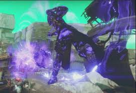

Void is considered the best subclass for Warlocks. A Warlock that uses Void is called a Voidwalker. There is only one super you can choose, but it pack a punch. Nova Bomb — Hurl an explosive bolt of Void Light at the enemy, disintegrating those caught within its blast. 
Entropic Pull — Strike an enemy with this melee ability to drain your enemy's life force and use it to recharge your grenade.
Atomic Breach — This melee ability creates a Void explosion.
Devour — Kills with this melee ability fully regenerate your health. For a short time afterward, kills restore additional health.
There are also three basic grenades to choose from.
Vortex Grenade — A grenade that creates a Vortex which continually damages enemies trapped inside.
Axion Bolt — A bolt of Void Light that forks into smaller bolts on impact that seek out enemies.
Scatter Grenade — A grenade that splits into many submunitions and covers a large area with multiple explosions.
You can visit Ikora Rey at the tower to unlock more grenades.